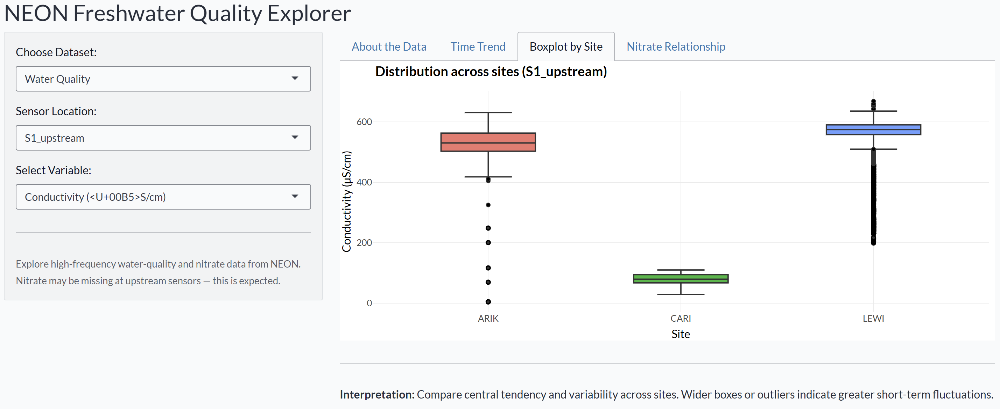
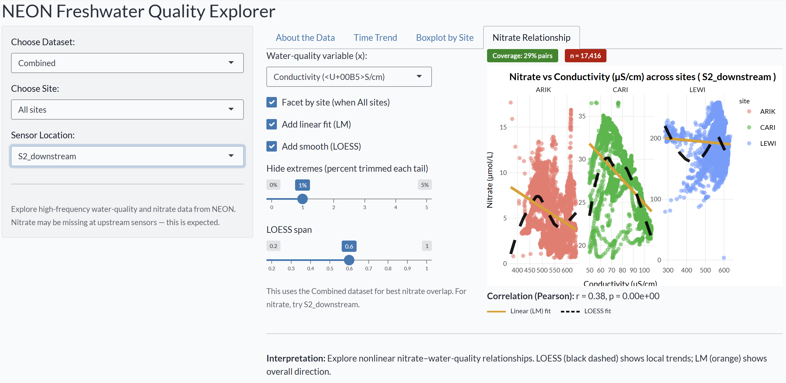

Introduction
assign4nspack is a teaching-focused R package for exploring high-frequency freshwater water-quality and nitrate relationships using data derived from the National Ecological Observatory Network (NEON).
It provides:
- Cleaned, curated hourly datasets (
wq_hourly,nitrate_hourly,wq_nitrate) - Data-processing scripts in
data-raw/ - An interactive Shiny app to visualise water-quality and nitrate trends across sites
- Full documentation and reproducible examples built with roxygen2 and pkgdown
Installation
You can install the development version of assign4nspack from GitHub with:
# install.packages("pak")
pak::pak("ETC5523-2025/assignment-4-packages-and-shiny-apps-NutchanokS")Then load the package:
Datasets Included
The package ships with three tidy datasets prepared from NEON sensor data:
| Dataset | Description |
|---|---|
wq_hourly |
Hourly water-quality data (conductivity, dissolved oxygen, turbidity) from NEON DP1.20288.001 |
nitrate_hourly |
Hourly nitrate concentrations (µmol/L) from NEON DP1.20033.001 |
wq_nitrate |
Combined dataset aligning water-quality and nitrate observations by site, sensor, and timestamp |
NEON Sites Included
This package includes three NEON freshwater stream sites used in Kermorvant et al. (2023):
| Site code | Full name | Location | Description |
|---|---|---|---|
| ARIK | Arikaree River | Colorado, USA | A semi-arid stream draining short-grass prairie and agricultural areas. Shows strong diel temperature and conductivity cycles and low nitrate variability. |
| CARI | Caribou Creek | Alaska, USA | A cold sub-arctic catchment with limited human influence. Low conductivity and nitrate due to pristine tundra landscape. |
| LEWI | Lewis Run | Pennsylvania, USA | A temperate, urban–agricultural watershed with elevated nitrate and conductivity from runoff and land use. |
These sites provide contrasting hydrological and biogeochemical regimes — ideal for exploring how water-quality variables relate to nitrate concentrations.
Data filtering and coverage
Data were sourced from NEON freshwater sites covering the period January 2018 to December 2019.
For each site, both upstream (S1_upstream) and downstream (S2_downstream) sensors were used when available.
Raw 15-minute observations from NEON products DP1.20288.001 (Water Quality) and DP1.20033.001 (Nitrate)
were aggregated to hourly means, quality-filtered (QF == 0), and merged by site, sensor, and date_time.
The final datasets include hourly records for multiple NEON stream sites consistent with
the study period described in Kermorvant et al. (2023):
> “Understanding links between water-quality variables and nitrate concentration in freshwater streams using high-frequency sensor data.”
This ensures the datasets reflect comparable temporal coverage and data quality to the published analysis.
Example preview
library(dplyr)
data("wq_nitrate", package = "assign4nspack")
glimpse(wq_nitrate)
#> Rows: 62,139
#> Columns: 7
#> $ site <chr> "ARIK", "ARIK", "ARIK", "ARIK", "ARIK", "ARIK", "ARIK", "ARIK", "ARIK",~
#> $ sensor <chr> "S1_upstream", "S1_upstream", "S1_upstream", "S1_upstream", "S1_upstrea~
#> $ date_time <dttm> 2019-01-03 16:00:00, 2019-01-03 17:00:00, 2019-01-03 18:00:00, 2019-01~
#> $ cond_uScm <dbl> 542.3400, 540.3288, 537.1060, 535.5428, 535.4665, 536.3322, 537.7798, 5~
#> $ do_mgL <dbl> 8.442500, 8.558167, 8.781667, 8.959333, 9.091833, 9.145000, 9.124500, 9~
#> $ turb_FNU <dbl> 0.8062500, 0.7151667, 0.6653333, 0.6310000, 0.6008333, 0.5710000, 0.554~
#> $ nitrate_umolL <dbl> NaN, NaN, NaN, NaN, NaN, NaN, NaN, NaN, NaN, NaN, NaN, NaN, NaN, NaN, N~Key variables
-
site— 4-letter NEON site identifier (e.g., ARIK, LEWI) -
sensor— sensor position (S1_upstream, S2_downstream) -
date_time— hourly timestamp (UTC) -
cond_uScm,do_mgL,turb_FNU— water-quality variables -
nitrate_umolL— nitrate concentration (µmol/L)
Shiny App
The package includes an interactive Shiny dashboard to explore how nitrate concentrations relate to water-quality measures across NEON sites.
Launch it with:
assign4nspack::run_app()App overview
| Tab | Purpose |
|---|---|
| About the Data | Explains NEON products, variable meanings, and interpretation guidance |
| Time Trend | Line plots showing changes in conductivity, oxygen, turbidity, or nitrate over time |
| Boxplot by Site | Compare distributions across sites |
| Nitrate Relationship | Explore nitrate vs. water-quality variables with optional LM/LOESS fits, correlation, and site facets |
Example Shiny App Screenshots
The following examples show key tabs from the NEON Freshwater Quality Explorer included in this package.
1. Time Trend:
Changes in water-quality variables (e.g., conductivity) over time for all sites. 
2. Boxplot by Site:
Distribution of conductivity across NEON sites. 
3. Nitrate Relationship:
Nitrate vs. conductivity with both Linear (orange) and LOESS (black dashed) fits. 
Data Sources
All datasets are derived from publicly available NEON sensor products:
- DP1.20288.001 — Aquatic Instrumentation: Water Quality (WQ)
- DP1.20033.001 — Aquatic Instrumentation: Nitrate in Surface Water (NSW)
Data were aggregated to hourly resolution, quality-checked, and merged by site and sensor. Used here solely for educational purposes in ETC5523 — Communicating with Data.
Documentation & Website
Package site: https://etc5523-2025.github.io/assignment-4-packages-and-shiny-apps-NutchanokS/
Acknowledgements
- Package infrastructure:
usethis,devtools,roxygen2,pkgdown - Data wrangling:
dplyr,tidyr,lubridate,purrr - Visualisation:
ggplot2,plotly,shiny,bslib - Original data source: National Ecological Observatory Network (NEON)
NEON (National Ecological Observatory Network). Water quality (DP1.20288.001), RELEASE-2025. https://doi.org/10.48443/03mj-t174. Dataset accessed from https://data.neonscience.org/data-products/DP1.20288.001/RELEASE-2025 on October 28, 2025.
NEON (National Ecological Observatory Network). Nitrate in surface water (DP1.20033.001), RELEASE-2025. https://doi.org/10.48443/wwa3-p420. Dataset accessed from https://data.neonscience.org/data-products/DP1.20033.001/RELEASE-2025 on October 28, 2025.